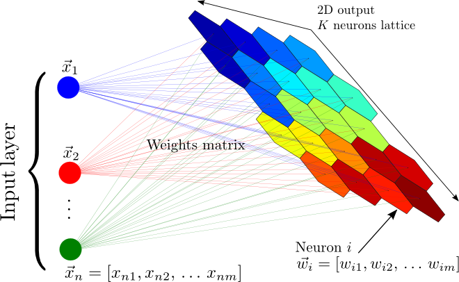

Package tf2-som
tf2-som is a fast Tensorflow 2 implementation of the Self Organizing Maps (SOM).

Installing tf2-som
pip3 install tf2-som
Importing tf2-som
import tf_som
Demo
Authors
Expand source code
# -*- coding: utf-8 -*-
########################################################################################################################
# TF_SOM
#
# Copyright © 2022 CNRS/LPSC
#
# Author: Jérôme ODIER (jerome.odier@lpsc.in2p3.fr)
# Nora ACHBAK (nora.achbak@lpsc.in2p3.fr)
#
# Repositories: https://gitlab.in2p3.fr/jodier/tf2_som/
# https://github.com/odier-xyz/tf2_som/
#
# This software is a computer program whose purpose is to provide an
# implementation of the Self Organizing Maps (SOM).
#
# This software is governed by the CeCILL-C license under French law and
# abiding by the rules of distribution of free software. You can use,
# modify and/or redistribute the software under the terms of the CeCILL-C
# license as circulated by CEA, CNRS and INRIA at the following URL
# "http://www.cecill.info".
#
# The fact that you are presently reading this means that you have had
# knowledge of the CeCILL-C license and that you accept its terms.
########################################################################################################################
""".. include:: ../docs/header.md
## Package **tf2-som**
**tf2-som** is a fast Tensorflow 2 implementation of the Self Organizing Maps (SOM).
<img src="som.png" alt="som" height="250" />
### Installing **tf2-som**
```sh
pip3 install tf2-som
```
### Importing **tf2-som**
```python
import tf_som
```
### Demo
[🔗 Click there](https://github.com/odier-io/tf2-som/blob/master/demo/demo.ipynb)
### Authors
- [Jérôme ODIER](https://annuaire.in2p3.fr/4121-4467/jerome-odier) ([CNRS/LPSC](https://lpsc.in2p3.fr/))
- [Nora ACHBAK](https://annuaire.in2p3.fr/7591-10426/nora-achbak) ([CNRS/LPSC](https://lpsc.in2p3.fr/))
"""
########################################################################################################################
import os
import json
import typing
import tqdm
########################################################################################################################
import numpy as np
import tensorflow as tf
########################################################################################################################
with open(os.path.join(os.path.dirname(os.path.realpath(__file__)), 'metadata.json'), 'r') as f:
metadata = json.load(f)
__credits__ = metadata['credits']
__version__ = metadata['version']
__author__ = ', '.join(['{} ({})'.format(x[0], x[1]) for x in zip(metadata['author_names'], metadata['author_emails'])])
########################################################################################################################
def setup_tensorflow_for_cpus(num_threads: int = None) -> None:
"""Setups Tensorflow 2 for CPU parallelization.
Arguments
---------
num_threads : int
Number of threads (default: multiprocessing.cpu_count())
"""
####################################################################################################################
if num_threads is None:
import multiprocessing
num_threads = multiprocessing.cpu_count()
####################################################################################################################
tf.config.threading.set_inter_op_parallelism_threads(
num_threads
)
tf.config.threading.set_intra_op_parallelism_threads(
num_threads
)
tf.config.set_soft_device_placement(True)
########################################################################################################################
def normalize(df, dtype: type = np.float32) -> None:
"""Normalizes a Pandas data frame.
Arguments
---------
df : pd.DataFrame
Pandas data frame.
dtype : type
Neural network data type (default: np.float32).
"""
result = df.copy()
for i in df.columns:
max_value = df[i].max()
min_value = df[i].min()
result[i] = (df[i] - min_value) / (max_value - min_value)
return result.astype(dtype)
########################################################################################################################
def _asymptotic_decay(epoch: int, epochs: int) -> float:
return 1.0 / (1.0 + 2.0 * epoch / epochs)
####################################################################################################################
class BMUs(object):
"""Best Matching Units"""
def __init__(self, indices: np.ndarray, locations: np.ndarray):
#: Array of indices
self.indices: np.ndarray = indices
#: Array of locations
self.locations: np.ndarray = locations
########################################################################################################################
class SOM(object):
"""Tensorflow 2 implementation of the Self Organizing Maps (SOM)."""
####################################################################################################################
def __init__(self,
m: int, n: int, dim: int,
seed: float = None, dtype: type = np.float32,
learning_rate: float = None, sigma: float = None, epochs: int = 100, decay_function = _asymptotic_decay):
"""Initializes a Self Organizing Maps.
A rule of thumb to set the size of the grid for a dimensionality reduction
task is that it should contain \\( 5\\sqrt{N} \\) neurons where N is the
number of samples in the dataset to analyze.
Arguments
---------
m : int
Number of neuron rows.
n : int
Number of neuron columns.
dim : int
Dimensionality of the input data.
seed : int
Seed of the random generators (default: None).
dtype : type
Neural network data type (default: np.float32).
learning_rate : float
Starting value of the learning rate (default: 0.3).
sigma : float
Starting value of the neighborhood radius (default: \\( \\mathrm{max}(m,n)/2 \\)).
epochs : int
Number of epochs to train for (default: 100).
decay_function : function
Function that reduces learning_rate and sigma at each iteration (default: \\( 1/\\left(1+2\\frac{epoch}{epochs}\\right) \\)).
"""
################################################################################################################
self._m = m
self._n = n
self._dim = dim
self._seed = seed
self._dtype = dtype
self._decay_function = decay_function
################################################################################################################
self._rebuild_topography()
################################################################################################################
self._learning_rate = 0.3 if learning_rate is None else dtype(learning_rate)
self._sigma = max(m, n) / 2.0 if sigma is None else dtype(sigma)
################################################################################################################
self._epochs = abs(int(epochs))
################################################################################################################
self._two = tf.constant(2.00e+00, dtype = dtype)
self._epsilon = tf.constant(1.00e-20, dtype = dtype)
self._sqrt_two = tf.constant(1.42e+00, dtype = dtype)
################################################################################################################
self._weights = np.empty(shape = (self._m * self._n, self._dim), dtype = self._dtype)
self._quantization_errors = np.empty(shape = (self._epochs, ), dtype = self._dtype)
self._topographic_errors = np.empty(shape = (self._epochs, ), dtype = self._dtype)
####################################################################################################################
def _rebuild_topography(self):
self._topography = tf.constant(np.array(list(self._neuron_locations(self._m, self._n))))
####################################################################################################################
@staticmethod
def _neuron_locations(m: int, n: int) -> typing.Iterator[typing.List[int]]:
for i in range(m):
for j in range(n):
yield [i, j]
####################################################################################################################
@staticmethod
def _argsort_n(x: tf.Tensor, n: int) -> np.ndarray:
if n > 1:
return tf.nn.top_k(tf.negative(x), k = n).indices
else:
return tf.expand_dims(tf.argmin(x, axis = 1), axis = 1)
####################################################################################################################
def _find_bmus(self, weights: typing.Union[tf.Variable, tf.Tensor], input_vectors: tf.Tensor, n: int = 1) -> typing.List[BMUs]:
################################################################################################################
# COMPUTE DISTANCE SQUARES #
################################################################################################################
distance_squares = tf.reduce_sum(
tf.square(
tf.subtract(
tf.expand_dims(input_vectors, axis = 1),
tf.expand_dims(weights, axis = 0)
)
),
axis = 2
)
################################################################################################################
# COMPUTE INDICES AND LOCATIONS #
################################################################################################################
result = []
for bmu_indices in tf.transpose(SOM._argsort_n(distance_squares, n)):
bmu_locations = tf.gather(self._topography, bmu_indices)
result.append(BMUs(bmu_indices, bmu_locations))
################################################################################################################
return result
####################################################################################################################
def _train(self, weights: tf.Variable, input_vectors: tf.Tensor, epoch: int) -> None:
################################################################################################################
# SHUFFLE INPUT VECTORS #
################################################################################################################
shuffled_indices = tf.random.shuffle(tf.range(start = 0, limit = tf.shape(input_vectors)[0], dtype = tf.int64))
input_vectors = tf.gather(input_vectors, shuffled_indices)
################################################################################################################
# BEST MATCHING UNITS #
################################################################################################################
bmus = self._find_bmus(weights, input_vectors, n = 2)
################################################################################################################
# LEARNING OPERATOR #
################################################################################################################
decay_function = self._decay_function(epoch, self._epochs)
current_learning_rate = tf.cast(self._learning_rate * decay_function, dtype = self._dtype)
current_radius = tf.cast(self._sigma * decay_function, dtype = self._dtype)
################################################################################################################
bmu_distance_squares = tf.reduce_sum(
tf.square(
tf.subtract(
tf.expand_dims(self._topography, axis = 0),
tf.expand_dims(bmus[0].locations, axis = 1)
)
),
axis = 2
)
################################################################################################################
neighbourhood_func = tf.exp(tf.divide(
tf.negative(tf.cast(bmu_distance_squares, self._dtype)),
tf.multiply(self._two, tf.square(current_radius))
))
################################################################################################################
learning_rate_op = tf.multiply(neighbourhood_func, current_learning_rate)
################################################################################################################
# WEIGHT(EPOCH + 1) #
################################################################################################################
numerator = tf.reduce_sum(
tf.multiply(
tf.expand_dims(learning_rate_op, axis = -1),
tf.expand_dims(input_vectors, axis = +1)
),
axis = 0
)
denominator = tf.expand_dims(tf.reduce_sum(learning_rate_op, axis = 0), axis = -1) + self._epsilon
################################################################################################################
weights.assign(tf.divide(numerator, denominator))
################################################################################################################
# QUANTIZATION ERROR #
################################################################################################################
self._quantization_errors[epoch] = tf.reduce_mean(
tf.norm(
tf.subtract(
input_vectors,
tf.gather(weights, bmus[0].indices)
),
axis = 1
),
axis = 0
)
################################################################################################################
# TOPOGRAPHIC ERROR #
################################################################################################################
t = tf.greater(
tf.norm(
tf.subtract(
tf.cast(bmus[1].locations, dtype = self._dtype),
tf.cast(bmus[0].locations, dtype = self._dtype)
),
axis = 1
),
self._sqrt_two
)
self._topographic_errors[epoch] = tf.divide(
tf.reduce_sum(tf.cast(t, dtype = self._dtype)),
tf.cast(tf.shape(input_vectors)[0], dtype = self._dtype)
)
####################################################################################################################
def train(self, input_vectors: np.ndarray, progress_bar: bool = True) -> None:
"""Trains the neural network. A batch formulation of updating weights is used: $$ \\mathrm{bmu}(x)=\\underset{i}{\\mathrm{arg\\,min}}\\lVert x-w_i\\rVert $$ $$ n_j=\\sum_{x\\in\\mathcal{D}}\\left\\{\\begin{array}{ll}1&\\mathrm{bmu}(x)=j\\\\0&\\mathrm{otherwise}\\end{array}\\right. $$ $$ \\Theta_{ji}(e)=\\alpha(e)\\cdot\\exp\\left(-\\frac{\\lVert j-i\\rVert}{2\\sigma^2(e)}\\right) $$ $$ \\boxed{w_{i\\,\\mathrm{new}}=\\frac{\\sum_{j=1}^{n}n_j\\Theta_{ji}(e)x_j}{\\sum_{j=1}^{n}n_j\\Theta_{ji}(e)}} $$ where, at epoch \\( e \\), \\( \\alpha(e)=\\alpha_0\\mathrm{decay\\,function}(e) \\) is the learning rate and \\( \\sigma(e)=\\sigma_0\\mathrm{decay\\,function}(e) \\) is the neighborhood radius.
Parameters
----------
input_vectors : np.ndarray
Training data.
progress_bar : bool
Specifying whether a progress bar have to be shown (default: True).
"""
################################################################################################################
# SET RANDOM SEED #
################################################################################################################
if self._seed is not None:
np.random.seed(self._seed)
tf.random.set_seed(self._seed)
################################################################################################################
# INITIALIZE WEIGHTS #
################################################################################################################
weights_np = np.empty(shape = (self._m * self._n, self._dim), dtype = self._dtype)
l1 = weights_np.shape[0]
l2 = input_vectors.shape[0]
for i in range(l1):
j = np.random.randint(l2)
weights_np[i] = input_vectors[j]
################################################################################################################
weights = tf.Variable(weights_np, dtype = self._dtype)
input_vectors = tf.constant(input_vectors, dtype = self._dtype)
################################################################################################################
# TRAIN THE SELF ORGANIZING MAP #
################################################################################################################
for epoch in tqdm.tqdm(range(self._epochs), disable = not progress_bar):
self._train(weights, input_vectors, epoch)
################################################################################################################
self._weights = weights.numpy()
####################################################################################################################
# noinspection PyTypeChecker
def save(self, filename: str, file_format: str = 'fits') -> None:
"""Saves the trained neural network to a file.
Parameters
----------
filename : str
Filename.
file_format : str
File format (supported formats: (fits, hdf5), default: fits).
"""
################################################################################################################
# FITS FORMAT #
################################################################################################################
if file_format == 'fits':
from astropy.io import fits
hdu0 = fits.PrimaryHDU()
hdu1 = fits.ImageHDU(data = self.get_centroids())
hdu2 = fits.BinTableHDU.from_columns(fits.ColDefs([
fits.Column(name = 'quantization_errors', format = 'D', array = self._quantization_errors),
fits.Column(name = 'topographic_errors', format = 'D', array = self._topographic_errors),
]))
hdu0.header['lrnrate'] = self._learning_rate
hdu0.header['sigma'] = self._sigma
hdu2.header['epochs'] = self._epochs
fits.HDUList([hdu0, hdu1, hdu2]).writeto(filename, overwrite = True)
################################################################################################################
# HDF5 FORMAT #
################################################################################################################
elif file_format == 'hdf5':
import h5py
with h5py.File(filename, 'w') as file:
file.attrs['lrnrate'] = self._learning_rate
file.attrs['sigma'] = self._sigma
file.attrs['epochs'] = self._epochs
file.create_dataset('weights', data = self.get_centroids())
file.create_dataset('quantization_errors', data = self._quantization_errors)
file.create_dataset('topographic_errors', data = self._topographic_errors)
################################################################################################################
else:
raise ValueError('invalid format `{}` (fits, hdf5)'.format(file_format))
####################################################################################################################
def load(self, filename: str, file_format: str = 'fits') -> None:
"""Loads the trained neural network from a file.
Parameters
----------
filename : str
Filename.
file_format : str
File format (supported formats: (fits, hdf5), default: fits).
"""
################################################################################################################
# FITS FORMAT #
################################################################################################################
if file_format == 'fits':
from astropy.io import fits
with fits.open(filename) as hdus:
self._m, self._n, self._dim = hdus[1].data.shape
self._learning_rate = hdus[0].header['lrnrate']
self._sigma = hdus[0].header['sigma']
self._epochs = hdus[2].header['epochs']
self._weights = hdus[1].data.reshape((self._m * self._n, self._dim)).astype(self._dtype)
self._quantization_errors = hdus[2].data['quantization_errors'].astype(self._dtype)
self._topographic_errors = hdus[2].data['topographic_errors'].astype(self._dtype)
################################################################################################################
# HDF5 FORMAT #
################################################################################################################
elif file_format == 'hdf5':
import h5py
with h5py.File(filename, 'r') as file:
self._m, self._n, self._dim = file['weights'].shape
self._learning_rate = file.attrs['lrnrate']
self._sigma = file.attrs['sigma']
self._epochs = file.attrs['epochs']
self._weights = np.array(file['weights']).reshape((self._m * self._n, self._dim)).astype(self._dtype)
self._quantization_errors = np.array(file['quantization_errors']).astype(self._dtype)
self._topographic_errors = np.array(file['topographic_errors']).astype(self._dtype)
################################################################################################################
else:
raise ValueError('invalid format `{}` (fits, hdf5)'.format(file_format))
################################################################################################################
self._rebuild_topography()
####################################################################################################################
def distance_map(self) -> np.ndarray:
"""Returns the distance map of the neural network weights."""
################################################################################################################
centroids = self.get_centroids()
################################################################################################################
result = np.full(shape = (centroids.shape[0], centroids.shape[1], 8), fill_value = np.nan, dtype = self._dtype)
ii = 2 * [[0, -1, -1, -1, 0, +1, +1, +1]]
jj = 2 * [[-1, -1, 0, +1, +1, +1, 0, -1]]
for x in range(centroids.shape[0]):
for y in range(centroids.shape[1]):
w_2 = centroids[x, y]
e = y % 2 == 0
for k, (i, j) in enumerate(zip(ii[e], jj[e])):
if 0 <= x + i < centroids.shape[0]\
and \
0 <= y + j < centroids.shape[1]:
diff_w_2_w_1 = w_2 - centroids[x + i, y + j]
result[x, y, k] = np.sqrt(np.dot(diff_w_2_w_1, diff_w_2_w_1.T))
result = np.nansum(result, axis = 2)
return result / result.max()
####################################################################################################################
def get_weights(self) -> np.ndarray:
"""Returns the neural network weights (shape = [m * n, dim])."""
return self._weights.reshape((self._m * self._n, self._dim))
####################################################################################################################
def get_centroids(self) -> np.ndarray:
"""Returns of the neural network weights (shape = [m, n, dim])."""
return self._weights.reshape((self._m, self._n, self._dim))
####################################################################################################################
def get_quantization_errors(self) -> np.ndarray:
"""Returns the quantization errors (one value per epoch). $$ c_1=\\mathrm{1^\\mathrm{st}\\,bmu}=\\underset{i}{\\mathrm{arg\\,min}_1}\\lVert x-w_i\\rVert $$ $$ \\boxed{e_Q=\\frac{1}{\\mathcal{D}}\\sum_{x\\in\\mathcal{D}}\\lVert x-w_{c_1}\\rVert^2} $$"""
return self._quantization_errors
####################################################################################################################
def get_topographic_errors(self) -> np.ndarray:
"""Returns the topographic errors (one value per epoch). $$ c_n=\\mathrm{n^\\mathrm{th}\\,bmu}=\\underset{i}{\\mathrm{arg\\,min}_n}\\lVert x-w_i\\rVert $$ $$ t(x)=\\left\\{\\begin{array}{ll}1&\\lVert c_1-c_2\\rVert>\\sqrt{2}\\\\0&\\mathrm{otherwise}\\end{array}\\right. $$ $$ \\boxed{e_t=\\frac{1}{\\mathcal{D}}\\sum_{x\\in\\mathcal{D}}t(x)} $$"""
return self._topographic_errors
####################################################################################################################
def winners(self, input_vectors: np.ndarray) -> BMUs:
"""Returns a vector of best matching unit locations and indices for the input.
Parameters
----------
input_vectors : np.ndarray
Input data.
"""
################################################################################################################
weights = tf.constant(self._weights, dtype = self._dtype)
input_vectors = tf.constant(input_vectors, dtype = self._dtype)
################################################################################################################
return self._find_bmus(weights, input_vectors, 1)[0]
####################################################################################################################
def input_map(self, input_vectors: np.ndarray) -> np.ndarray:
"""Returns a vector containing the coordinates (i, j) of the winner neuron for each input.
Parameters
----------
input_vectors : np.ndarray
Input data.
"""
################################################################################################################
weights = tf.constant(self._weights, dtype = self._dtype)
input_vectors = tf.constant(input_vectors, dtype = self._dtype)
################################################################################################################
result = np.empty((input_vectors.shape[0], 2), dtype = np.int64)
################################################################################################################
idx = 0
for bmu_location in self._find_bmus(weights, input_vectors, n = 1)[0].locations:
_, result[idx] = bmu_location
idx = idx + 1
################################################################################################################
return result.reshape(input_vectors.shape[0], 2)
####################################################################################################################
def activation_map(self, input_vectors: np.ndarray) -> np.ndarray:
"""Returns a matrix containing the number of times the neuron (i, j) have been winner for the input.
Parameters
----------
input_vectors : np.ndarray
Input data.
"""
################################################################################################################
weights = tf.constant(self._weights, dtype = self._dtype)
input_vectors = tf.constant(input_vectors, dtype = self._dtype)
################################################################################################################
result = np.zeros(shape = (self._m * self._n), dtype = np.int64)
################################################################################################################
for bmu_index in self._find_bmus(weights, input_vectors, n = 1)[0].indices:
result[bmu_index] += 1
################################################################################################################
return result.reshape(self._m, self._n)
########################################################################################################################Functions
def setup_tensorflow_for_cpus(num_threads: int = None) ‑> None-
Setups Tensorflow 2 for CPU parallelization.
Arguments
num_threads:int- Number of threads (default: multiprocessing.cpu_count())
Expand source code
def setup_tensorflow_for_cpus(num_threads: int = None) -> None: """Setups Tensorflow 2 for CPU parallelization. Arguments --------- num_threads : int Number of threads (default: multiprocessing.cpu_count()) """ #################################################################################################################### if num_threads is None: import multiprocessing num_threads = multiprocessing.cpu_count() #################################################################################################################### tf.config.threading.set_inter_op_parallelism_threads( num_threads ) tf.config.threading.set_intra_op_parallelism_threads( num_threads ) tf.config.set_soft_device_placement(True) def normalize(df, dtype: type = numpy.float32) ‑> None-
Normalizes a Pandas data frame.
Arguments
df:pd.DataFrame- Pandas data frame.
dtype:type- Neural network data type (default: np.float32).
Expand source code
def normalize(df, dtype: type = np.float32) -> None: """Normalizes a Pandas data frame. Arguments --------- df : pd.DataFrame Pandas data frame. dtype : type Neural network data type (default: np.float32). """ result = df.copy() for i in df.columns: max_value = df[i].max() min_value = df[i].min() result[i] = (df[i] - min_value) / (max_value - min_value) return result.astype(dtype)
Classes
class BMUs (indices: numpy.ndarray, locations: numpy.ndarray)-
Best Matching Units
Expand source code
class BMUs(object): """Best Matching Units""" def __init__(self, indices: np.ndarray, locations: np.ndarray): #: Array of indices self.indices: np.ndarray = indices #: Array of locations self.locations: np.ndarray = locationsInstance variables
var indices-
Array of indices
var locations-
Array of locations
class SOM (m: int, n: int, dim: int, seed: float = None, dtype: type = numpy.float32, learning_rate: float = None, sigma: float = None, epochs: int = 100, decay_function=<function _asymptotic_decay>)-
Tensorflow 2 implementation of the Self Organizing Maps (SOM).
Initializes a Self Organizing Maps.
A rule of thumb to set the size of the grid for a dimensionality reduction task is that it should contain 5\sqrt{N} neurons where N is the number of samples in the dataset to analyze.
Arguments
m:int- Number of neuron rows.
n:int- Number of neuron columns.
dim:int- Dimensionality of the input data.
seed:int- Seed of the random generators (default: None).
dtype:type- Neural network data type (default: np.float32).
learning_rate:float- Starting value of the learning rate (default: 0.3).
sigma:float- Starting value of the neighborhood radius (default: \mathrm{max}(m,n)/2 ).
epochs:int- Number of epochs to train for (default: 100).
decay_function:function- Function that reduces learning_rate and sigma at each iteration (default: 1/\left(1+2\frac{epoch}{epochs}\right) ).
Expand source code
class SOM(object): """Tensorflow 2 implementation of the Self Organizing Maps (SOM).""" #################################################################################################################### def __init__(self, m: int, n: int, dim: int, seed: float = None, dtype: type = np.float32, learning_rate: float = None, sigma: float = None, epochs: int = 100, decay_function = _asymptotic_decay): """Initializes a Self Organizing Maps. A rule of thumb to set the size of the grid for a dimensionality reduction task is that it should contain \\( 5\\sqrt{N} \\) neurons where N is the number of samples in the dataset to analyze. Arguments --------- m : int Number of neuron rows. n : int Number of neuron columns. dim : int Dimensionality of the input data. seed : int Seed of the random generators (default: None). dtype : type Neural network data type (default: np.float32). learning_rate : float Starting value of the learning rate (default: 0.3). sigma : float Starting value of the neighborhood radius (default: \\( \\mathrm{max}(m,n)/2 \\)). epochs : int Number of epochs to train for (default: 100). decay_function : function Function that reduces learning_rate and sigma at each iteration (default: \\( 1/\\left(1+2\\frac{epoch}{epochs}\\right) \\)). """ ################################################################################################################ self._m = m self._n = n self._dim = dim self._seed = seed self._dtype = dtype self._decay_function = decay_function ################################################################################################################ self._rebuild_topography() ################################################################################################################ self._learning_rate = 0.3 if learning_rate is None else dtype(learning_rate) self._sigma = max(m, n) / 2.0 if sigma is None else dtype(sigma) ################################################################################################################ self._epochs = abs(int(epochs)) ################################################################################################################ self._two = tf.constant(2.00e+00, dtype = dtype) self._epsilon = tf.constant(1.00e-20, dtype = dtype) self._sqrt_two = tf.constant(1.42e+00, dtype = dtype) ################################################################################################################ self._weights = np.empty(shape = (self._m * self._n, self._dim), dtype = self._dtype) self._quantization_errors = np.empty(shape = (self._epochs, ), dtype = self._dtype) self._topographic_errors = np.empty(shape = (self._epochs, ), dtype = self._dtype) #################################################################################################################### def _rebuild_topography(self): self._topography = tf.constant(np.array(list(self._neuron_locations(self._m, self._n)))) #################################################################################################################### @staticmethod def _neuron_locations(m: int, n: int) -> typing.Iterator[typing.List[int]]: for i in range(m): for j in range(n): yield [i, j] #################################################################################################################### @staticmethod def _argsort_n(x: tf.Tensor, n: int) -> np.ndarray: if n > 1: return tf.nn.top_k(tf.negative(x), k = n).indices else: return tf.expand_dims(tf.argmin(x, axis = 1), axis = 1) #################################################################################################################### def _find_bmus(self, weights: typing.Union[tf.Variable, tf.Tensor], input_vectors: tf.Tensor, n: int = 1) -> typing.List[BMUs]: ################################################################################################################ # COMPUTE DISTANCE SQUARES # ################################################################################################################ distance_squares = tf.reduce_sum( tf.square( tf.subtract( tf.expand_dims(input_vectors, axis = 1), tf.expand_dims(weights, axis = 0) ) ), axis = 2 ) ################################################################################################################ # COMPUTE INDICES AND LOCATIONS # ################################################################################################################ result = [] for bmu_indices in tf.transpose(SOM._argsort_n(distance_squares, n)): bmu_locations = tf.gather(self._topography, bmu_indices) result.append(BMUs(bmu_indices, bmu_locations)) ################################################################################################################ return result #################################################################################################################### def _train(self, weights: tf.Variable, input_vectors: tf.Tensor, epoch: int) -> None: ################################################################################################################ # SHUFFLE INPUT VECTORS # ################################################################################################################ shuffled_indices = tf.random.shuffle(tf.range(start = 0, limit = tf.shape(input_vectors)[0], dtype = tf.int64)) input_vectors = tf.gather(input_vectors, shuffled_indices) ################################################################################################################ # BEST MATCHING UNITS # ################################################################################################################ bmus = self._find_bmus(weights, input_vectors, n = 2) ################################################################################################################ # LEARNING OPERATOR # ################################################################################################################ decay_function = self._decay_function(epoch, self._epochs) current_learning_rate = tf.cast(self._learning_rate * decay_function, dtype = self._dtype) current_radius = tf.cast(self._sigma * decay_function, dtype = self._dtype) ################################################################################################################ bmu_distance_squares = tf.reduce_sum( tf.square( tf.subtract( tf.expand_dims(self._topography, axis = 0), tf.expand_dims(bmus[0].locations, axis = 1) ) ), axis = 2 ) ################################################################################################################ neighbourhood_func = tf.exp(tf.divide( tf.negative(tf.cast(bmu_distance_squares, self._dtype)), tf.multiply(self._two, tf.square(current_radius)) )) ################################################################################################################ learning_rate_op = tf.multiply(neighbourhood_func, current_learning_rate) ################################################################################################################ # WEIGHT(EPOCH + 1) # ################################################################################################################ numerator = tf.reduce_sum( tf.multiply( tf.expand_dims(learning_rate_op, axis = -1), tf.expand_dims(input_vectors, axis = +1) ), axis = 0 ) denominator = tf.expand_dims(tf.reduce_sum(learning_rate_op, axis = 0), axis = -1) + self._epsilon ################################################################################################################ weights.assign(tf.divide(numerator, denominator)) ################################################################################################################ # QUANTIZATION ERROR # ################################################################################################################ self._quantization_errors[epoch] = tf.reduce_mean( tf.norm( tf.subtract( input_vectors, tf.gather(weights, bmus[0].indices) ), axis = 1 ), axis = 0 ) ################################################################################################################ # TOPOGRAPHIC ERROR # ################################################################################################################ t = tf.greater( tf.norm( tf.subtract( tf.cast(bmus[1].locations, dtype = self._dtype), tf.cast(bmus[0].locations, dtype = self._dtype) ), axis = 1 ), self._sqrt_two ) self._topographic_errors[epoch] = tf.divide( tf.reduce_sum(tf.cast(t, dtype = self._dtype)), tf.cast(tf.shape(input_vectors)[0], dtype = self._dtype) ) #################################################################################################################### def train(self, input_vectors: np.ndarray, progress_bar: bool = True) -> None: """Trains the neural network. A batch formulation of updating weights is used: $$ \\mathrm{bmu}(x)=\\underset{i}{\\mathrm{arg\\,min}}\\lVert x-w_i\\rVert $$ $$ n_j=\\sum_{x\\in\\mathcal{D}}\\left\\{\\begin{array}{ll}1&\\mathrm{bmu}(x)=j\\\\0&\\mathrm{otherwise}\\end{array}\\right. $$ $$ \\Theta_{ji}(e)=\\alpha(e)\\cdot\\exp\\left(-\\frac{\\lVert j-i\\rVert}{2\\sigma^2(e)}\\right) $$ $$ \\boxed{w_{i\\,\\mathrm{new}}=\\frac{\\sum_{j=1}^{n}n_j\\Theta_{ji}(e)x_j}{\\sum_{j=1}^{n}n_j\\Theta_{ji}(e)}} $$ where, at epoch \\( e \\), \\( \\alpha(e)=\\alpha_0\\mathrm{decay\\,function}(e) \\) is the learning rate and \\( \\sigma(e)=\\sigma_0\\mathrm{decay\\,function}(e) \\) is the neighborhood radius. Parameters ---------- input_vectors : np.ndarray Training data. progress_bar : bool Specifying whether a progress bar have to be shown (default: True). """ ################################################################################################################ # SET RANDOM SEED # ################################################################################################################ if self._seed is not None: np.random.seed(self._seed) tf.random.set_seed(self._seed) ################################################################################################################ # INITIALIZE WEIGHTS # ################################################################################################################ weights_np = np.empty(shape = (self._m * self._n, self._dim), dtype = self._dtype) l1 = weights_np.shape[0] l2 = input_vectors.shape[0] for i in range(l1): j = np.random.randint(l2) weights_np[i] = input_vectors[j] ################################################################################################################ weights = tf.Variable(weights_np, dtype = self._dtype) input_vectors = tf.constant(input_vectors, dtype = self._dtype) ################################################################################################################ # TRAIN THE SELF ORGANIZING MAP # ################################################################################################################ for epoch in tqdm.tqdm(range(self._epochs), disable = not progress_bar): self._train(weights, input_vectors, epoch) ################################################################################################################ self._weights = weights.numpy() #################################################################################################################### # noinspection PyTypeChecker def save(self, filename: str, file_format: str = 'fits') -> None: """Saves the trained neural network to a file. Parameters ---------- filename : str Filename. file_format : str File format (supported formats: (fits, hdf5), default: fits). """ ################################################################################################################ # FITS FORMAT # ################################################################################################################ if file_format == 'fits': from astropy.io import fits hdu0 = fits.PrimaryHDU() hdu1 = fits.ImageHDU(data = self.get_centroids()) hdu2 = fits.BinTableHDU.from_columns(fits.ColDefs([ fits.Column(name = 'quantization_errors', format = 'D', array = self._quantization_errors), fits.Column(name = 'topographic_errors', format = 'D', array = self._topographic_errors), ])) hdu0.header['lrnrate'] = self._learning_rate hdu0.header['sigma'] = self._sigma hdu2.header['epochs'] = self._epochs fits.HDUList([hdu0, hdu1, hdu2]).writeto(filename, overwrite = True) ################################################################################################################ # HDF5 FORMAT # ################################################################################################################ elif file_format == 'hdf5': import h5py with h5py.File(filename, 'w') as file: file.attrs['lrnrate'] = self._learning_rate file.attrs['sigma'] = self._sigma file.attrs['epochs'] = self._epochs file.create_dataset('weights', data = self.get_centroids()) file.create_dataset('quantization_errors', data = self._quantization_errors) file.create_dataset('topographic_errors', data = self._topographic_errors) ################################################################################################################ else: raise ValueError('invalid format `{}` (fits, hdf5)'.format(file_format)) #################################################################################################################### def load(self, filename: str, file_format: str = 'fits') -> None: """Loads the trained neural network from a file. Parameters ---------- filename : str Filename. file_format : str File format (supported formats: (fits, hdf5), default: fits). """ ################################################################################################################ # FITS FORMAT # ################################################################################################################ if file_format == 'fits': from astropy.io import fits with fits.open(filename) as hdus: self._m, self._n, self._dim = hdus[1].data.shape self._learning_rate = hdus[0].header['lrnrate'] self._sigma = hdus[0].header['sigma'] self._epochs = hdus[2].header['epochs'] self._weights = hdus[1].data.reshape((self._m * self._n, self._dim)).astype(self._dtype) self._quantization_errors = hdus[2].data['quantization_errors'].astype(self._dtype) self._topographic_errors = hdus[2].data['topographic_errors'].astype(self._dtype) ################################################################################################################ # HDF5 FORMAT # ################################################################################################################ elif file_format == 'hdf5': import h5py with h5py.File(filename, 'r') as file: self._m, self._n, self._dim = file['weights'].shape self._learning_rate = file.attrs['lrnrate'] self._sigma = file.attrs['sigma'] self._epochs = file.attrs['epochs'] self._weights = np.array(file['weights']).reshape((self._m * self._n, self._dim)).astype(self._dtype) self._quantization_errors = np.array(file['quantization_errors']).astype(self._dtype) self._topographic_errors = np.array(file['topographic_errors']).astype(self._dtype) ################################################################################################################ else: raise ValueError('invalid format `{}` (fits, hdf5)'.format(file_format)) ################################################################################################################ self._rebuild_topography() #################################################################################################################### def distance_map(self) -> np.ndarray: """Returns the distance map of the neural network weights.""" ################################################################################################################ centroids = self.get_centroids() ################################################################################################################ result = np.full(shape = (centroids.shape[0], centroids.shape[1], 8), fill_value = np.nan, dtype = self._dtype) ii = 2 * [[0, -1, -1, -1, 0, +1, +1, +1]] jj = 2 * [[-1, -1, 0, +1, +1, +1, 0, -1]] for x in range(centroids.shape[0]): for y in range(centroids.shape[1]): w_2 = centroids[x, y] e = y % 2 == 0 for k, (i, j) in enumerate(zip(ii[e], jj[e])): if 0 <= x + i < centroids.shape[0]\ and \ 0 <= y + j < centroids.shape[1]: diff_w_2_w_1 = w_2 - centroids[x + i, y + j] result[x, y, k] = np.sqrt(np.dot(diff_w_2_w_1, diff_w_2_w_1.T)) result = np.nansum(result, axis = 2) return result / result.max() #################################################################################################################### def get_weights(self) -> np.ndarray: """Returns the neural network weights (shape = [m * n, dim]).""" return self._weights.reshape((self._m * self._n, self._dim)) #################################################################################################################### def get_centroids(self) -> np.ndarray: """Returns of the neural network weights (shape = [m, n, dim]).""" return self._weights.reshape((self._m, self._n, self._dim)) #################################################################################################################### def get_quantization_errors(self) -> np.ndarray: """Returns the quantization errors (one value per epoch). $$ c_1=\\mathrm{1^\\mathrm{st}\\,bmu}=\\underset{i}{\\mathrm{arg\\,min}_1}\\lVert x-w_i\\rVert $$ $$ \\boxed{e_Q=\\frac{1}{\\mathcal{D}}\\sum_{x\\in\\mathcal{D}}\\lVert x-w_{c_1}\\rVert^2} $$""" return self._quantization_errors #################################################################################################################### def get_topographic_errors(self) -> np.ndarray: """Returns the topographic errors (one value per epoch). $$ c_n=\\mathrm{n^\\mathrm{th}\\,bmu}=\\underset{i}{\\mathrm{arg\\,min}_n}\\lVert x-w_i\\rVert $$ $$ t(x)=\\left\\{\\begin{array}{ll}1&\\lVert c_1-c_2\\rVert>\\sqrt{2}\\\\0&\\mathrm{otherwise}\\end{array}\\right. $$ $$ \\boxed{e_t=\\frac{1}{\\mathcal{D}}\\sum_{x\\in\\mathcal{D}}t(x)} $$""" return self._topographic_errors #################################################################################################################### def winners(self, input_vectors: np.ndarray) -> BMUs: """Returns a vector of best matching unit locations and indices for the input. Parameters ---------- input_vectors : np.ndarray Input data. """ ################################################################################################################ weights = tf.constant(self._weights, dtype = self._dtype) input_vectors = tf.constant(input_vectors, dtype = self._dtype) ################################################################################################################ return self._find_bmus(weights, input_vectors, 1)[0] #################################################################################################################### def input_map(self, input_vectors: np.ndarray) -> np.ndarray: """Returns a vector containing the coordinates (i, j) of the winner neuron for each input. Parameters ---------- input_vectors : np.ndarray Input data. """ ################################################################################################################ weights = tf.constant(self._weights, dtype = self._dtype) input_vectors = tf.constant(input_vectors, dtype = self._dtype) ################################################################################################################ result = np.empty((input_vectors.shape[0], 2), dtype = np.int64) ################################################################################################################ idx = 0 for bmu_location in self._find_bmus(weights, input_vectors, n = 1)[0].locations: _, result[idx] = bmu_location idx = idx + 1 ################################################################################################################ return result.reshape(input_vectors.shape[0], 2) #################################################################################################################### def activation_map(self, input_vectors: np.ndarray) -> np.ndarray: """Returns a matrix containing the number of times the neuron (i, j) have been winner for the input. Parameters ---------- input_vectors : np.ndarray Input data. """ ################################################################################################################ weights = tf.constant(self._weights, dtype = self._dtype) input_vectors = tf.constant(input_vectors, dtype = self._dtype) ################################################################################################################ result = np.zeros(shape = (self._m * self._n), dtype = np.int64) ################################################################################################################ for bmu_index in self._find_bmus(weights, input_vectors, n = 1)[0].indices: result[bmu_index] += 1 ################################################################################################################ return result.reshape(self._m, self._n)Methods
def train(self, input_vectors: numpy.ndarray, progress_bar: bool = True) ‑> None-
Trains the neural network. A batch formulation of updating weights is used: \mathrm{bmu}(x)=\underset{i}{\mathrm{arg\,min}}\lVert x-w_i\rVert n_j=\sum_{x\in\mathcal{D}}\left\{\begin{array}{ll}1&\mathrm{bmu}(x)=j\\0&\mathrm{otherwise}\end{array}\right. \Theta_{ji}(e)=\alpha(e)\cdot\exp\left(-\frac{\lVert j-i\rVert}{2\sigma^2(e)}\right) \boxed{w_{i\,\mathrm{new}}=\frac{\sum_{j=1}^{n}n_j\Theta_{ji}(e)x_j}{\sum_{j=1}^{n}n_j\Theta_{ji}(e)}} where, at epoch e , \alpha(e)=\alpha_0\mathrm{decay\,function}(e) is the learning rate and \sigma(e)=\sigma_0\mathrm{decay\,function}(e) is the neighborhood radius.
Parameters
input_vectors:np.ndarray- Training data.
progress_bar:bool- Specifying whether a progress bar have to be shown (default: True).
Expand source code
def train(self, input_vectors: np.ndarray, progress_bar: bool = True) -> None: """Trains the neural network. A batch formulation of updating weights is used: $$ \\mathrm{bmu}(x)=\\underset{i}{\\mathrm{arg\\,min}}\\lVert x-w_i\\rVert $$ $$ n_j=\\sum_{x\\in\\mathcal{D}}\\left\\{\\begin{array}{ll}1&\\mathrm{bmu}(x)=j\\\\0&\\mathrm{otherwise}\\end{array}\\right. $$ $$ \\Theta_{ji}(e)=\\alpha(e)\\cdot\\exp\\left(-\\frac{\\lVert j-i\\rVert}{2\\sigma^2(e)}\\right) $$ $$ \\boxed{w_{i\\,\\mathrm{new}}=\\frac{\\sum_{j=1}^{n}n_j\\Theta_{ji}(e)x_j}{\\sum_{j=1}^{n}n_j\\Theta_{ji}(e)}} $$ where, at epoch \\( e \\), \\( \\alpha(e)=\\alpha_0\\mathrm{decay\\,function}(e) \\) is the learning rate and \\( \\sigma(e)=\\sigma_0\\mathrm{decay\\,function}(e) \\) is the neighborhood radius. Parameters ---------- input_vectors : np.ndarray Training data. progress_bar : bool Specifying whether a progress bar have to be shown (default: True). """ ################################################################################################################ # SET RANDOM SEED # ################################################################################################################ if self._seed is not None: np.random.seed(self._seed) tf.random.set_seed(self._seed) ################################################################################################################ # INITIALIZE WEIGHTS # ################################################################################################################ weights_np = np.empty(shape = (self._m * self._n, self._dim), dtype = self._dtype) l1 = weights_np.shape[0] l2 = input_vectors.shape[0] for i in range(l1): j = np.random.randint(l2) weights_np[i] = input_vectors[j] ################################################################################################################ weights = tf.Variable(weights_np, dtype = self._dtype) input_vectors = tf.constant(input_vectors, dtype = self._dtype) ################################################################################################################ # TRAIN THE SELF ORGANIZING MAP # ################################################################################################################ for epoch in tqdm.tqdm(range(self._epochs), disable = not progress_bar): self._train(weights, input_vectors, epoch) ################################################################################################################ self._weights = weights.numpy() def save(self, filename: str, file_format: str = 'fits') ‑> None-
Saves the trained neural network to a file.
Parameters
filename:str- Filename.
file_format:str- File format (supported formats: (fits, hdf5), default: fits).
Expand source code
def save(self, filename: str, file_format: str = 'fits') -> None: """Saves the trained neural network to a file. Parameters ---------- filename : str Filename. file_format : str File format (supported formats: (fits, hdf5), default: fits). """ ################################################################################################################ # FITS FORMAT # ################################################################################################################ if file_format == 'fits': from astropy.io import fits hdu0 = fits.PrimaryHDU() hdu1 = fits.ImageHDU(data = self.get_centroids()) hdu2 = fits.BinTableHDU.from_columns(fits.ColDefs([ fits.Column(name = 'quantization_errors', format = 'D', array = self._quantization_errors), fits.Column(name = 'topographic_errors', format = 'D', array = self._topographic_errors), ])) hdu0.header['lrnrate'] = self._learning_rate hdu0.header['sigma'] = self._sigma hdu2.header['epochs'] = self._epochs fits.HDUList([hdu0, hdu1, hdu2]).writeto(filename, overwrite = True) ################################################################################################################ # HDF5 FORMAT # ################################################################################################################ elif file_format == 'hdf5': import h5py with h5py.File(filename, 'w') as file: file.attrs['lrnrate'] = self._learning_rate file.attrs['sigma'] = self._sigma file.attrs['epochs'] = self._epochs file.create_dataset('weights', data = self.get_centroids()) file.create_dataset('quantization_errors', data = self._quantization_errors) file.create_dataset('topographic_errors', data = self._topographic_errors) ################################################################################################################ else: raise ValueError('invalid format `{}` (fits, hdf5)'.format(file_format)) def load(self, filename: str, file_format: str = 'fits') ‑> None-
Loads the trained neural network from a file.
Parameters
filename:str- Filename.
file_format:str- File format (supported formats: (fits, hdf5), default: fits).
Expand source code
def load(self, filename: str, file_format: str = 'fits') -> None: """Loads the trained neural network from a file. Parameters ---------- filename : str Filename. file_format : str File format (supported formats: (fits, hdf5), default: fits). """ ################################################################################################################ # FITS FORMAT # ################################################################################################################ if file_format == 'fits': from astropy.io import fits with fits.open(filename) as hdus: self._m, self._n, self._dim = hdus[1].data.shape self._learning_rate = hdus[0].header['lrnrate'] self._sigma = hdus[0].header['sigma'] self._epochs = hdus[2].header['epochs'] self._weights = hdus[1].data.reshape((self._m * self._n, self._dim)).astype(self._dtype) self._quantization_errors = hdus[2].data['quantization_errors'].astype(self._dtype) self._topographic_errors = hdus[2].data['topographic_errors'].astype(self._dtype) ################################################################################################################ # HDF5 FORMAT # ################################################################################################################ elif file_format == 'hdf5': import h5py with h5py.File(filename, 'r') as file: self._m, self._n, self._dim = file['weights'].shape self._learning_rate = file.attrs['lrnrate'] self._sigma = file.attrs['sigma'] self._epochs = file.attrs['epochs'] self._weights = np.array(file['weights']).reshape((self._m * self._n, self._dim)).astype(self._dtype) self._quantization_errors = np.array(file['quantization_errors']).astype(self._dtype) self._topographic_errors = np.array(file['topographic_errors']).astype(self._dtype) ################################################################################################################ else: raise ValueError('invalid format `{}` (fits, hdf5)'.format(file_format)) ################################################################################################################ self._rebuild_topography() def distance_map(self) ‑> numpy.ndarray-
Returns the distance map of the neural network weights.
Expand source code
def distance_map(self) -> np.ndarray: """Returns the distance map of the neural network weights.""" ################################################################################################################ centroids = self.get_centroids() ################################################################################################################ result = np.full(shape = (centroids.shape[0], centroids.shape[1], 8), fill_value = np.nan, dtype = self._dtype) ii = 2 * [[0, -1, -1, -1, 0, +1, +1, +1]] jj = 2 * [[-1, -1, 0, +1, +1, +1, 0, -1]] for x in range(centroids.shape[0]): for y in range(centroids.shape[1]): w_2 = centroids[x, y] e = y % 2 == 0 for k, (i, j) in enumerate(zip(ii[e], jj[e])): if 0 <= x + i < centroids.shape[0]\ and \ 0 <= y + j < centroids.shape[1]: diff_w_2_w_1 = w_2 - centroids[x + i, y + j] result[x, y, k] = np.sqrt(np.dot(diff_w_2_w_1, diff_w_2_w_1.T)) result = np.nansum(result, axis = 2) return result / result.max() def get_weights(self) ‑> numpy.ndarray-
Returns the neural network weights (shape = [m * n, dim]).
Expand source code
def get_weights(self) -> np.ndarray: """Returns the neural network weights (shape = [m * n, dim]).""" return self._weights.reshape((self._m * self._n, self._dim)) def get_centroids(self) ‑> numpy.ndarray-
Returns of the neural network weights (shape = [m, n, dim]).
Expand source code
def get_centroids(self) -> np.ndarray: """Returns of the neural network weights (shape = [m, n, dim]).""" return self._weights.reshape((self._m, self._n, self._dim)) def get_quantization_errors(self) ‑> numpy.ndarray-
Returns the quantization errors (one value per epoch). c_1=\mathrm{1^\mathrm{st}\,bmu}=\underset{i}{\mathrm{arg\,min}_1}\lVert x-w_i\rVert \boxed{e_Q=\frac{1}{\mathcal{D}}\sum_{x\in\mathcal{D}}\lVert x-w_{c_1}\rVert^2}
Expand source code
def get_quantization_errors(self) -> np.ndarray: """Returns the quantization errors (one value per epoch). $$ c_1=\\mathrm{1^\\mathrm{st}\\,bmu}=\\underset{i}{\\mathrm{arg\\,min}_1}\\lVert x-w_i\\rVert $$ $$ \\boxed{e_Q=\\frac{1}{\\mathcal{D}}\\sum_{x\\in\\mathcal{D}}\\lVert x-w_{c_1}\\rVert^2} $$""" return self._quantization_errors def get_topographic_errors(self) ‑> numpy.ndarray-
Returns the topographic errors (one value per epoch). c_n=\mathrm{n^\mathrm{th}\,bmu}=\underset{i}{\mathrm{arg\,min}_n}\lVert x-w_i\rVert t(x)=\left\{\begin{array}{ll}1&\lVert c_1-c_2\rVert>\sqrt{2}\\0&\mathrm{otherwise}\end{array}\right. \boxed{e_t=\frac{1}{\mathcal{D}}\sum_{x\in\mathcal{D}}t(x)}
Expand source code
def get_topographic_errors(self) -> np.ndarray: """Returns the topographic errors (one value per epoch). $$ c_n=\\mathrm{n^\\mathrm{th}\\,bmu}=\\underset{i}{\\mathrm{arg\\,min}_n}\\lVert x-w_i\\rVert $$ $$ t(x)=\\left\\{\\begin{array}{ll}1&\\lVert c_1-c_2\\rVert>\\sqrt{2}\\\\0&\\mathrm{otherwise}\\end{array}\\right. $$ $$ \\boxed{e_t=\\frac{1}{\\mathcal{D}}\\sum_{x\\in\\mathcal{D}}t(x)} $$""" return self._topographic_errors def winners(self, input_vectors: numpy.ndarray) ‑> BMUs-
Returns a vector of best matching unit locations and indices for the input.
Parameters
input_vectors:np.ndarray- Input data.
Expand source code
def winners(self, input_vectors: np.ndarray) -> BMUs: """Returns a vector of best matching unit locations and indices for the input. Parameters ---------- input_vectors : np.ndarray Input data. """ ################################################################################################################ weights = tf.constant(self._weights, dtype = self._dtype) input_vectors = tf.constant(input_vectors, dtype = self._dtype) ################################################################################################################ return self._find_bmus(weights, input_vectors, 1)[0] def input_map(self, input_vectors: numpy.ndarray) ‑> numpy.ndarray-
Returns a vector containing the coordinates (i, j) of the winner neuron for each input.
Parameters
input_vectors:np.ndarray- Input data.
Expand source code
def input_map(self, input_vectors: np.ndarray) -> np.ndarray: """Returns a vector containing the coordinates (i, j) of the winner neuron for each input. Parameters ---------- input_vectors : np.ndarray Input data. """ ################################################################################################################ weights = tf.constant(self._weights, dtype = self._dtype) input_vectors = tf.constant(input_vectors, dtype = self._dtype) ################################################################################################################ result = np.empty((input_vectors.shape[0], 2), dtype = np.int64) ################################################################################################################ idx = 0 for bmu_location in self._find_bmus(weights, input_vectors, n = 1)[0].locations: _, result[idx] = bmu_location idx = idx + 1 ################################################################################################################ return result.reshape(input_vectors.shape[0], 2) def activation_map(self, input_vectors: numpy.ndarray) ‑> numpy.ndarray-
Returns a matrix containing the number of times the neuron (i, j) have been winner for the input.
Parameters
input_vectors:np.ndarray- Input data.
Expand source code
def activation_map(self, input_vectors: np.ndarray) -> np.ndarray: """Returns a matrix containing the number of times the neuron (i, j) have been winner for the input. Parameters ---------- input_vectors : np.ndarray Input data. """ ################################################################################################################ weights = tf.constant(self._weights, dtype = self._dtype) input_vectors = tf.constant(input_vectors, dtype = self._dtype) ################################################################################################################ result = np.zeros(shape = (self._m * self._n), dtype = np.int64) ################################################################################################################ for bmu_index in self._find_bmus(weights, input_vectors, n = 1)[0].indices: result[bmu_index] += 1 ################################################################################################################ return result.reshape(self._m, self._n)